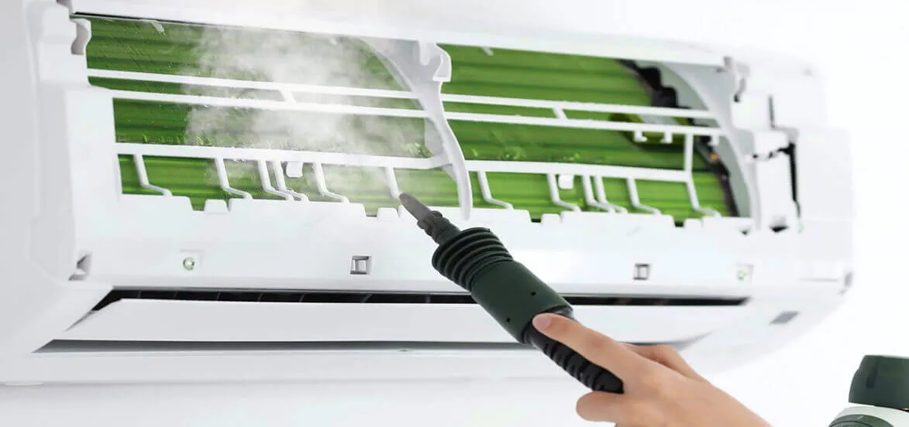

What Are The 5 Reasons To Get Your AC Tuned Up?

It is essential to keep all electrical appliances up-to-date so that you can take full advantage of them. Not only this, it is crucial to take care of all your belongings so that they can last longer and can save a lot of your money.
There are various reasons why you should take care of your electrical appliances and get them checked from time to time. As summers are approaching, electrical appliances like refrigerators and air conditioners will be in demand, and these are some of the electrical appliances which will be in use 24/7. So, it is crucial to keep these appliances well maintained and checked timely for many reasons. In this regard, you can hire professionals for AC tune up services in San Diego and fix your air conditioner.
5 Reasons To Have Your Air Conditioner Serviced:
1. Stay Cool:
It is usual all the electrical appliances, which are well maintained and tuned up, work well. If you talk about air conditioners, then you should take proper care of them and maintain them properly. So, they will give you cooler air as compared to the unfit air conditioners. It will cool down the room very quickly, and you will not have to wait for a longer period for it to cool down all the surroundings.
You must have seen in various restaurants and cafes. There are air conditioners that are turned on, and when you step into the cafe, you feel all that cool air. It is because of the ACs being well maintained and tuned up. So, for the same reason, if you will get your air conditioner well checked and maintained, it will also offer cool air, and you will see that your surroundings will cool down very quickly without wasting much time. But still, facing any issue, call the experienced electrician in San Diego for air conditioning services at nominal prices.

2. Lowers Down Your Electricity Bills:
If your air conditioner is tuned up and well maintained, then you will observe that your electricity bills will come down. It will lower your electricity bill, and as an outcome, you will be able to save a lot of money. Usually, the air conditioners, which are not well maintained and checked, become a reason for your high electricity bills, and as an outcome, you need to pay a lot of money. Thus, it creates a hole in your pocket. But, if you will properly maintain your air conditioners, it will save a lot of your money and lower your electricity bills.
For this reason, a tuned up air conditioner will become a reason for you to pay fewer electricity bills. Now, you can save a lot of money, and after maintaining your old air conditioner, there will be a huge change in your electricity bills. You will not have to spend much on it. Hence, it is a wise time investment to get your ACs checked regularly from professionals. It will work very efficiently without using much energy or causing trouble to your wallets.
3. Allow ACs To Last Longer:
If you take proper care of your air conditioners and will properly maintain them, you will see that your air conditioners will last longer. You should properly maintain your electrical appliances. Usually, the appliances which are not well maintained and don't get maintenance from time to time get damaged very quickly, and as an outcome, you either need to replace it or get it repaired, which costs a lot of money. So, if you have the same worries, release all your tension, as after you offer proper maintenance to an air conditioner, no need of frequent repair or premature replacement. It will last longer and will not create a hole in your pocket in any way.
Therefore, after getting your air conditioners well checked and maintained from time to time, you will be able to reduce the chances of your air conditioners getting damaged or complete wear and tear. As you know, a well-maintained electrical appliance is away from all the problems. Only appoint licensed electricians for AC maintenance services in San Diego.
4. Makes The Unit More Efficient:
If your air conditioner receives proper care and maintenance timely, you will see that it will make the use of energy more efficient. It means that it will save electricity and will use units efficiently. Due to this, you can save your electricity as well as money. It is good for the environment, and every other electrical appliance should work like this only. Whenever an appliance doesn't get proper maintenance or checkup, it starts to use more and more energy. It further leads to high electricity bills, as well as heavy consumption of energy which is not good for the environment and safe for consumers. So, there will not be an issue with this appliance as you can easily use it efficiently.
Therefore, a well-maintained and tuned up air conditioner will not use much energy. Also, as an outcome, it will contribute to saving the environment. There are millions of people who use electrical appliances like air conditioners regularly and use so much energy. So, it is very important to save energy as much as you can, and if you take care of your appliances from time to time, you can make them use less energy in contrast to the appliances that don't get professional maintenance and check-ups.
5. Releases Your Tension:
If you keep your air conditioners up to date and maintain them, you will not have any tension related to them. Usually, people whose ACs are not well maintained and tuned up get a lot of issues and stress. They make noise, electricity bills get hefty, high energy consumption, and many more problems. All these reasons become a matter of stress, and it hampers your daily life in a lot of ways. So, if you will keep your air conditioners well-maintained, you can release all your tension and stress and can easily use them. You'll no longer have any stress about it and can take its services without facing any difficulty.
For this reason, after getting your air conditioner well checked and repaired, you will no longer have any tension related to it being a matter of concern in your life. It will not create any trouble. So, you will not ask for constant repair or early replacement. So, stay stress free while using your well-maintained appliances now!
Conclusion
Usually, the ACs, which get maintenance checks from time to time, do not get damaged or don't ask for a replacement until maturity. They will last longer compared to air conditioners or electrical appliances, which don't get precise maintenance and checkups. Therefore, it is vital to keep a check on these appliances because these are the essential appliances. However, if these will get damaged, it will become a matter of concern and stress in your life. You cannot survive without these appliances. So, it is beneficial to maintain and check your appliances timely. Connect with a professional company that provide AC tune up services in San Diego at an affordable range.